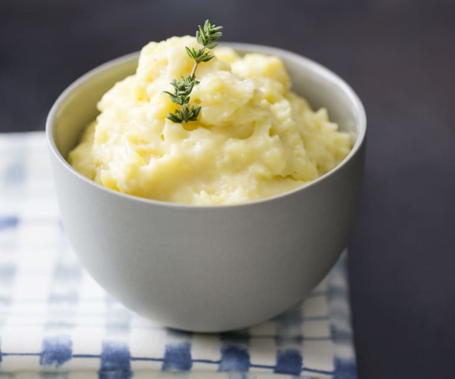

Mashed Potatoes

Description:
Mashed Potato Recipe is easy to make with basic ingredients like butter and sour cream with optional additions such as garlic and Parmesan cheese!
Ingredients:
- 3.5 lbs. Yukon Gold potatoes*, about 4 large potatoes, each about .85 lbs
- 3.5 teaspoons salt, plus more to taste at the end
- 6 Tablespoons salted butter, at room temperature
- 1/2 cup sour cream
- 1 cup half & half
- ½ teaspoon black pepper
Steps:
- Add the half and half and sour cream to a small bowl and whisk to combine. Set it aside and allow it to come to room temperature. It shouldn't be cold when added to the potatoes.
- Peel each potato and give them a quick rinse to remove any dirt/residue from the peel. Cut into 3/4-inch slices and place in a large pot. Add cold water until they're all submerged.
- Slowly bring to a gentle boil, do not boil rapidly. This ensures the potatoes cook evenly and prevents them from falling apart. Once a soft boil is reached, add 3.5 teaspoons salt.
- Cook for 25 minutes or until the potatoes are very fork tender, don't undercook or they'll be lumpy when mashed. Turn heat off.
- Drain all of the water. Let the potatoes sit in the warm pot for 5 minutes to allow most of the steam to escape.
- Add the butter to the potatoes and allow it to gradually melt.
- Drizzle ¾ of the half & half/sour cream over the mashed potatoes. Mash with a potato masher (not an elective mixer), until soft and creamy. Don’t over mash or the consistency will become gluey. Add remaining dairy only if a slightly creamier texture is desired.
- Taste the potatoes and add more salt/pepper if needed. Transfer to a serving dish and serve!